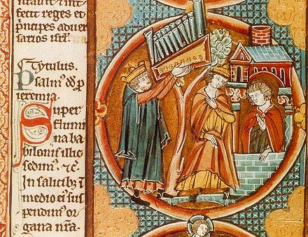
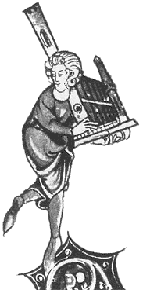
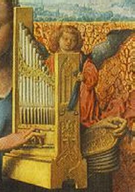
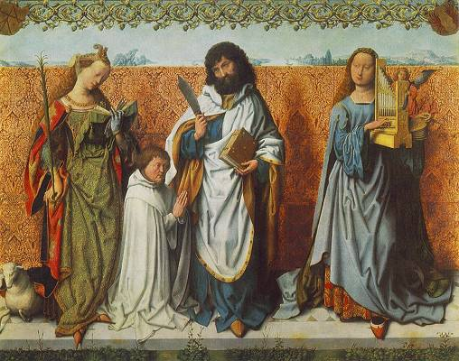

ORGUE (de main)
Notes et
commentaires.
commentaires.

Figure 1
Dictionnaire raisonné du mobilier.
ORGUE (de main)
commentaires. |
Figure 1 |
La figure 1, de la main de Viollet le Duc, est une copie d'une miniature d'un manuscrit se trouvant aujourd'hui à la Bibliothèque Nationale à Paris1. Celle-ci est intéressante à plus d'un titre : d'une part elle montre un instrument portatif mais de l'autre, elle interprète littérallement le deuxième verset du psaume 136 2 :
In salicibus in medio ejus suspendimus organa nostra.
 La miniature illustre un personnage couronné en train de suspendre un orgue dans un arbre... Le mot organa peut donc être, à cette époque traduit librement ; si Luther choisira, au XVIe siècle de le traduire par harpes, André Chouraqui préfèrera au XXe y voir des lyres...
Sur les saules, en son sein, nous suspendions nos lyres.
Sources : L'orgue, Friedrich Jacob, Éditions Van de Velde / Payot, Paris, 1983. La Bible, traduction par André Chouraqui, Éditions Desclée de Brouwer, 1989.
Figure 2
Je n'ai pas encore retrouvé l'origine exacte du manuscrit d'où provient cette figure redessinée par Violet-le-Duc mais une visite sur le Web m'a amené sur les sites L'iconographie de l'orgue d'Alban Thomas et The Shrine of Saint Cecilia qui, tout deux, donnent une reproduction de ce manuscrit (sans aucun doute possible) en le datant du XIIIe siècle sans en dire plus.
La recherche reste donc, ici comme ailleurs, pleinement ouverte.
 Figure 2 |
 |
Figure 3
Le tableau dont parle Viollet le Duc est toujours présent à la Alte Pinakothek de Munich. C'est une peinture sur bois (129 × 161 cm.) faite par celui que l'on appelle le Maître du retable de Saint Bartholomée. Le nom de ce maître est en fait inconnu. Il arriva probablement à Cologne depuis Utrecht et fut actif entre 1485 et 1510. Il prit son nom après avoir exécuté son chef d'œuvre, le triptyque de Saint Bartholomée, fait pour l'église Sainte Colombe de Cologne.
 Figure 3 |
 |
On voit sur le panneau central du triptyque que les trois saints sont représentés munis de leurs symboles respectifs : Saint Agnès avec l'agneau, Saint Bartholomée avec le couteau et Sainte Cécile avec son orgue. À noter aussi la présence du donateur du tableau, agenouillé au côté de Saint Bartholomée.

Sources : Web Gallery of Art.
Notes :
(1) Sous la cote : ms. fonds latin 11560, réserve, fol. 36.
(2) Notation numérique de la Vulgate.